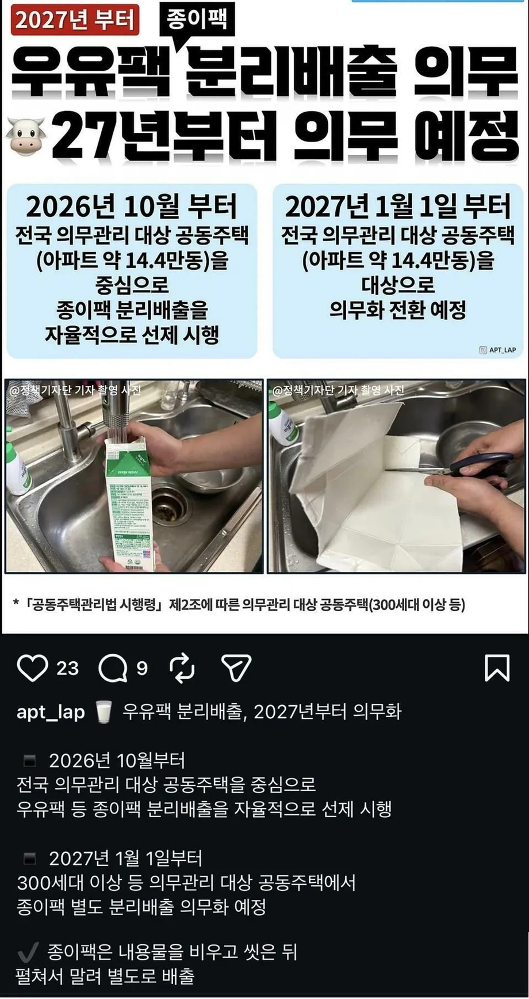

일반 주택살면 분리수거 감시하는 사람이 없어서 야랄 안해도 되는데 아파트살면 경비 아저씨가 감시함
배달음식용기 세척해서 배출, 박스에 테이프 떼고 배출, 페트는 라벨띠고 구겨서 배출
최대한 노력하는데 분리수거하러 나가면 경비아재가 감시하려고 헐레벌떡 뛰어오는거 보면 ㄹㅇ 이게 맞나 싶다
우유팩 세척해서 배출까지는 이해하겠는데 펼치고 말려...? ㅋㅋㅋ

일반 주택살면 분리수거 감시하는 사람이 없어서 야랄 안해도 되는데 아파트살면 경비 아저씨가 감시함
배달음식용기 세척해서 배출, 박스에 테이프 떼고 배출, 페트는 라벨띠고 구겨서 배출
최대한 노력하는데 분리수거하러 나가면 경비아재가 감시하려고 헐레벌떡 뛰어오는거 보면 ㄹㅇ 이게 맞나 싶다
우유팩 세척해서 배출까지는 이해하겠는데 펼치고 말려...? ㅋㅋㅋ
그러고 있잖아... 그거랑 이건 머가 다르냐고 쌩
걍 버릴건데요
국민들이 순종적으로 다 해주니까 아주 개 좆으로 알고 염병을 함. 그래서 전세계에서 제일 분리수거 잘해다 주면 리사이클링을 잘 하기나 하나?? 그러지도 않잖아
나 제일 어이없는게 분리 다해도 분리안하는 곳도 있고 쓰레기 다 섞이고 결국 그 공장?에서 재분리함 ㅋㅋㅋㅋ
저지랄까지하면 걍 버릴껀데요? 시전하는거지 ㄷㄷ
걍 일쓰에 섞어 버리겠다 저걸 언제하고있어
우유 안 먹을게
어 좆까 치킨양념 발라서 버려줄게 ㅋㅋ
근데 걍 물로 대충 행궈서 종량제봉투에 버려도 불법은 아니지?
안헹궈도됨
안 행구면 냄새나 ㅠ
길에 던져버려
멸균우유팩은 특수재질이라 상관 없겠네
국산우유가 경쟁력을 또 하나 잃었다
나도 보자마자 '오 멸균우유 팩은 상관없네?' 하고 생각 듦.
아 ㄹㅇ? 난 멸균우유 노린거라고 생각했는데 아니었구나
우리 아파트는 상시 개방인데 먼 검사 같은 소리를 하냐
신축들이 좀 그러고 5년쯤되면 막가파임
ㅇㄱㄹㅇ 우리아파트 이제 15년 되가는데 그런거없음 ㅋㅋㅋㅋ 심지어 노친네들 창문밖으로 뉴케어던진다고 관리사무소에서 방송때림ㅋㅋㅋㅋㅋㅋ 좀죽어라
경비가 감시하는 이유는 수거 업체가 진짜로 안가져가기 때문. 각각 수거 업체 올때마다 경비들 존나 싸움. 각각 다른 매 업체마다 매번 고지전 열림 ㅋㅋㅋㅋ
ㅇㄱㄹㅇ
어쩐지 분리수거 하러 가면 한 5~60퍼 확률로 만난다 했더니
경비 아저씨만 중간에서 ㅈㄴ불쌍한거임
관리사무소에서는 알빠노하면서 경비보고 분리수거 감시하라고 던지고,
재활용 수거 업체에서는 분리수거 제대로 안한다고 만만한 경비한테 ㅈㄹ하고,
입주민들은 국가에서 저 지랄하는거에 환멸 느끼고,
빌런들은 진짜 음식물 쓰레기 일반 쓰레기에 넣어 버리는 놈들이 부지기수고,
저래놓고 경비 업무 빵꾸나면 경비 아저씨 갈굼
경비가 언제부터 분리수거 감시단이 됐냐
돈은 최저시급 ㅋㅋㅋ
걍 우유를 안먹을란다 ㅋㅋ
저지랄 할 빠에 걍 일반쓰레기에 다 넣고 버릴건데? 봉투 사주는것만해도 고맙게 생각하쇼
아파트 살면 ㄹㅇ 경비가 감시함?? 일평생 아파트 살면서 그런적이 없는데 오히려 주택 살면 일쓰통 뒤져서 신고넣는 할매들 많다며
우린 하던데 주공임
근데 뭐라하진 않고 잘못버리면 그사람 떠나고 말없이 와서 분류 대신해줌
아이 씨발 뭐만하면 자꾸 좆같은 방향으로 만드는 거 같아 저게 진짜 환경에 도움이 돼??
이럴거면 그냥 종이팩 불법으로 하자 종이팩 우유 왜 사먹냐 진심
종이팩 모아다 행정센터인가 가면 휴지 준다며
근데 앵간히 우유 많이 먹거나 업장이라 소비량 많은거 아니면 모으는데 한참 걸릴꺼고 씻는다고 해도 냄새도 날꺼고 바꾸러 가는 시간도 아깝고..
지랄 ㅋㅋ 내용물 씻고 접어주는것만으로도 감사히 여겨야지
우유회사에서 로비 안해줘서 빡쳤나
우유팩 재활용 되지도 않는거 뭘 따로버리래
난 주차문제만 아니면 주택이 편하던데.. 아니면 고급빌라나.. 근데 한국은 그런곳이 매우 드물지..
분리수거 저게 존나 개꼴깝인거같틈
우리는 그냥 정리하는분 고용한것같던데. 기본적으로 우리가 하긴한데
일쓰 슛
요새 페트병으로도 우유나온다.
우유팩 안씻고 일쓰에 버림 되는거지?
분리수거 리사이클 공장도 일본만큼 잘 되어 있는것도 아니던데 환경도 엄청 열악해 보이더라
개지랄임. 규제가 암만 저리 빡세진대도 정작 분리수거 하는 공장이 변하질 못함. 분리수거 하는 의미가 별로 없음. 그냥 경비랑 주민들만 의미없이 똥꼬쇼하는거임. 그래서 난 그냥 분리수거 쓰레기들은 분류 안하고 걍 한데 모아놓고 던져버림. 그래도 아~~무 영향없음
걍 종량제봉투 사서 버리면 됨
걍 우유를 처먹지 말라그래
아님 플라스틱 페트병에 담아 팔아라